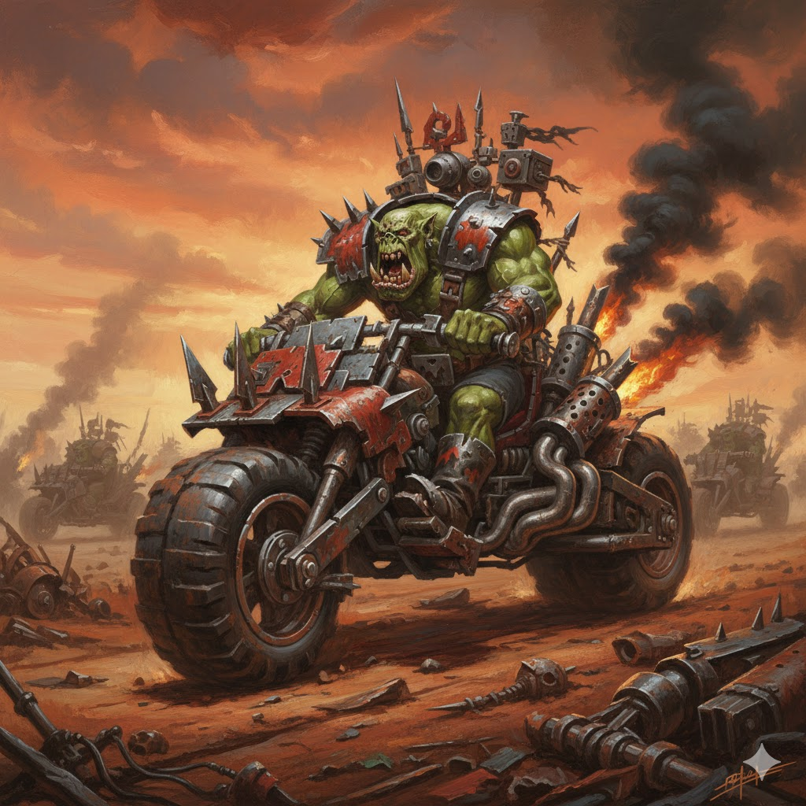
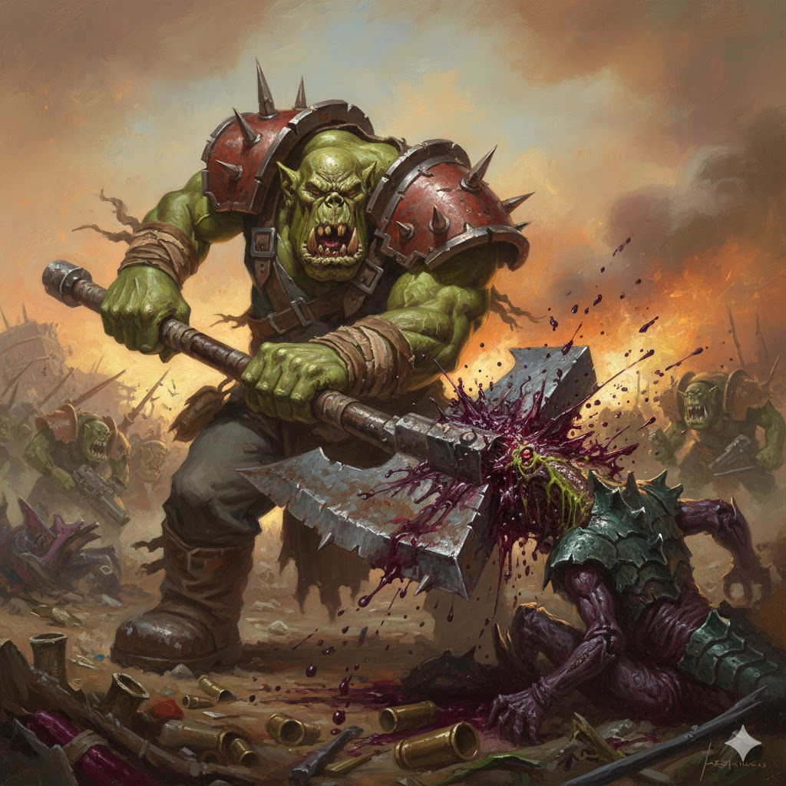

Orks

Sociedade Ork
Os Orks são a personificação da brutalidade e do caos. Crescem, lutam e riem do perigo, movidos pela crença de que quanto mais violento, melhor.

Tecnologia Ork: WAAAGH!
Sua "tecnologia" desafia lógica: armas montadas com ferro-velho funcionam porque eles acreditam que vão funcionar. O conceito de WAAAGH! une tribos inteiras em campanhas de destruição.
Curiosidades
- Orks liberam esporos ao morrer, gerando mais Orks.
- São geneticamente programados para guerra.
- Seu líder supremo é o maior e mais brutal: o Warboss.
- Pintam veículos de vermelho porque "vermelho é mais rápido".